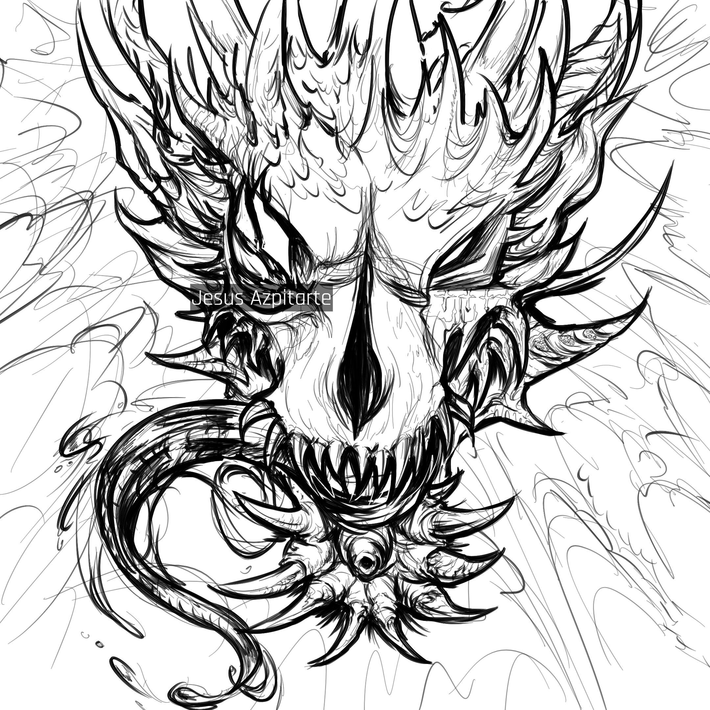

About Me

I am a computer programmer with a strong background in visual design and art who's passionate for learning. I love using my programming skills and artistic abilities for good and meaningful projects.
Technical Background
I have the most technical experience in web development. I have been a designer and developer in various projects.
Check them out:
Tools
- HTML
- CSS
- JavaScript
- TypesScript
- Mongo
- Express
- React
- Node
Web Programming
- Figma
- Python
- Krita
- OpenGL
- Qiskit
Miscellaneous
Personal Interests
Guitar
I love strumming and noodling around on my electric and acoustic guitar! I listen to alternative rock and french house.
Listen to this rock demo I made:
Track Art Cover

Art
My favorite hobby includes drawing and all sorts of two-dimensional art! Here's a piece I'm really proud of:
